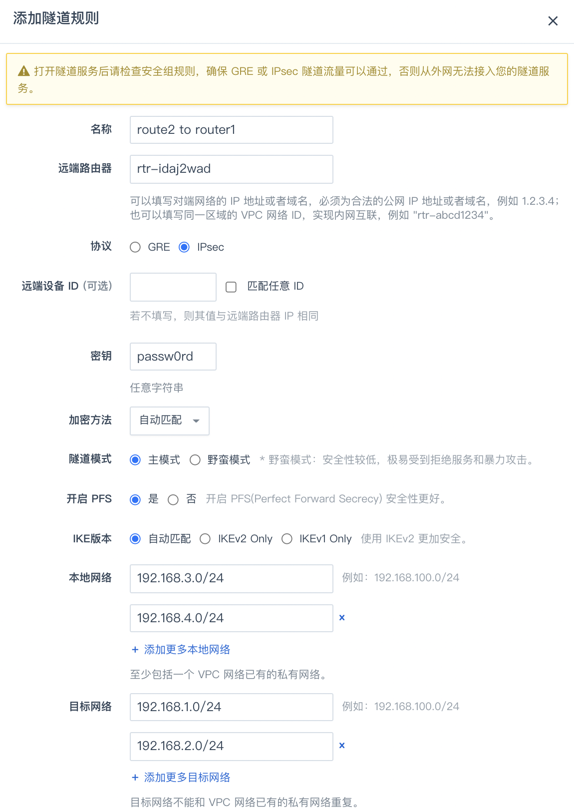

IPsec 隧道
IPsec 是一种加密的隧道技术，通过使用加密的安全服务在不同的网络之间建立保密而安全的通讯隧道。本指南通过介绍简单的内网对连拓扑来介绍 IPsec 的使用方式， 其他更高级的连接拓扑和 GRE 隧道类似，可参见 GRE 隧道，在此不再赘述。
简单的内网对连拓扑
如下图所示，假设您有两个 VPC 网络 ，位于同一区域，分别为 router1 和 router2，这两个 VPC 网络各连接有两个私有网络，它们将通过 IPsec 隧道连接在一起。

1. 配置 router1 的 IPsec 隧道
-
登录管理控制台，选择产品与服务 > 网络服务 > VPC 网络，进入 VPC 列表页面。
-
找到您的 VPC 网络，点击 VPC 网络名称，进入详情页。
-
切换至管理配置页签，然后点击隧道服务 > 添加隧道规则。
-
在弹出的对话框里，填写以下项目:

- 名称: 为该隧道起个名字，比如 “router1 to router2”。
- 远端路由器： 因为是内网互连，在本例中填入远端路由器 ID 即可，如果是公网互连，则需要填入远端路由器的公网 IP 或是域名；如果对端没有固定IP，可填 0.0.0.0，部分设备还必须点选使用 野蛮模式 进行互连。
- 协议:：选择 IPsec。
- 密钥:：一个两端共同约定的密钥，可以为任意字符串。
- 加密方法：选择加密方法，支持AES、3DES及自动匹配。
- 隧道模式：默认主模式，野蛮模式安全性较低，极易受到拒绝服务和暴力攻击，请慎重选择。
- 开启 PFS：开启 PFS(Perfect Forward Secrecy) 安全性更好。
- IKE 版本：使用 IKEv2 比 IKEv1 更加安全。本例中选择自动匹配。
- 本地网络：至少包括一个路由器已有的私有网络。在本例中该路由器的两个私有网络 192.168.1.0/24、192.168.2.0/24。
- 目标网络：在本例中为远端路由器的两个私有网络 192.168.3.0/24、192.168.4.0/24。
- 远端设备 ID：接勃对端设备的 ID 标识符，默认值与远端路由器项同，如果不确认，可勾选匹配任意 ID。
- 健康检查 IP：用于健康检查的目标地址，必须处于目标网络中且可以 ping 通，也可以同时添加 IP 和端口，例如 192.168.200.2 或者 192.168.200.2:80；检查 IP 可以添加多个，也可以为空。
-
确认无误后，点击提交，然后点击页面上方的应用修改，以完成路由器的配置更新。
-
前往 VPC 网络使用的安全组规则中打开 IPsec 协议需要的端口和协议，分别为 UDP 500, UDP 4500, AH 和 ESP，然后点击应用更改。
2. 配置 router2 的 IPsec 隧道
由于隧道的对称性，在 VPC 网络 router2 上也需要有对应的配置。
-
在管理配置页签，点击隧道服务 > 添加隧道规则。
-
在隧道配置对话框里，填写以下项目:
- 名称: 为该隧道起个名字，比如 “router2 to router1”。
- 协议: 选择 IPsec。
- 远端路由器: 因为是内网互连，在本例中填入远端路由器 ID 即可，如果是公网互连，则需要填入远端路由器的公网 IP 或是域名。
- 密钥: 一个两端共同约定的密钥，可以为任意字符串。
- 本地网络: 在本例中该路由器的两个私有网络 192.168.3.0/24、192.168.4.0/24。
- 目标网络: 在本例中为远端路由器的两个私有网络 192.168.1.0/24、192.168.2.0/24。
- 其他配置使用默认选项即可。
-
确认无误后，点击提交，然后点击页面上方的应用修改，完成路由器的配置更新。
-
前往该 VPC 使用的安全组规则中打开 IPsec 协议需要的端口和协议，分别为 UDP 500, UDP 4500, AH 和 ESP，然后点击应用更改。
3. 测试连通性
在完成两个VPC 网络的隧道配置之后，我们可以通过这两个 VPC 网络下的云服务器进行连通性测试，如下图所示：

4. 和物理设备做 IPsec 互联
以上例子是 VPC 之间做 IPsec 互联。VPC 也可以和具有 IPsec 功能的物理设备（路由器、防火墙等）做互联。
以下是现阶段 VPC IPsec 的支持参数，支持参数自动匹配、自动协商。
MODE: main[主模式]/aggrmode[野蛮模式]
TYPE: tunnel
IKE: ikev1(默认)/ikev2
IKE encrypt: AES(默认)/3DES
ESP encrypt: AES（默认）/3DES/DES/CAST/BLOWFISH/CAMELLIA/SERPENT/TWOFISH
IKE SA lifetime: 3600s
IPsec SA lifetime: 28800s
HASH: MD5/SHA1(默认)/SHA2
DH-GROUP: 2/5/14（默认）/15/16/17/18/22/23/24
PFS: up
NAT-Traversal: up
AUTH: PSK
DPDDelay: 15s
通常在物理设备上需要显式地定义 IPsec 的加密集(encryption和HASH)、DH group、lifetime、access-list、路由、NAT豁免等。
如果对接的物理设备在内网，需要在基于 IPsec 的隧道规则中配置 “对端设备ID”，通常填写所对接内网的网关 IP。
假设本地私有网络为 192.168.1.0/24，云上私有网络为 192.168.100.0/24，本地公网地址为 88.88.88.88，云裳 VPC 公网地址为 99.99.99.99。
以 Cisco ASA 设备为例，使用 cli 进行配置，主要包含了 crypto-map、access-list、psk、tunnel 的配置文本:
ASA(config)# access-list my_nat extended permit ip 192.168.1.0 255.255.255.0 192.168.100.0 255.255.255.0
ASA(config)# access-list cisco-to-qiyiyun extended permit ip 192.168.1.0 255.255.255.0 192.168.100.0 255.255.255.0
ASA(config)# nat (inside) 0 access-list my_nat
ASA(config)# crypto ipsec transform-set ESP-3DES-MD5 esp-3des esp-md5-hmac
ASA(config)# crypto ipsec security-association lifetime seconds 28800
ASA(config)# crypto ipsec security-association lifetime kilobytes 4608000
ASA(config)# crypto map my_map 1 match address cisco-to-yiqiyun
ASA(config)# crypto map my_map 1 set pfs
ASA(config)# crypto map my_map 1 set peer 99.99.99.99
ASA(config)# crypto map my_map 1 set transform-set ESP-3DES-MD5
ASA(config)# crypto map my_map interface outside
ASA(config)# crypto isakmp enable outside
ASA(config)# crypto isakmp policy 10
ASA(config-isakmp)# authentication pre-share
ASA(config-isakmp)# encryption 3des
ASA(config-isakmp)# hash md5
ASA(config-isakmp)# group 2
ASA(config-isakmp)# lifetime 3600
ASA(config)# crypto isakmp nat-traversal 60
ASA(config)# tunnel-group 99.99.99.99 type ipsec-l2l
ASA(config)# tunnel-group 99.99.99.99 ipsec-attributes
ASA(config-tunnel-ipsec)# pre-shared-key *****
以 H3C Router 设备为例，使用 cli 进行配置，主要包含了 transform-set、policy、profile、proposal、psk、acl 的配置文本:
#
acl number 3100
rule 10 permit ip source 192.168.1.0 0.0.0.255 destination 192.168.100.0 0.0.0.255
#
ipsec transform-set tran1
esp encryption-algorithm aes-cbc-128
esp authentication-algorithm sha1
pfs dh-group14
#
ipsec policy map1 10 isakmp
transform-set tran1
security acl 3100
remote-address 99.99.99.99
ike-profile profile1
sa duration time-based 28800
#
ike profile profile1
keychain keychain1
local-identity address 88.88.88.88
match remote identity address 99.99.99.99 255.255.255.255
proposal 1
#
ike proposal 1
encryption-algorithm 3des-cbc
dh group14
sa duration 3600
#
ike keychain keychain1
pre-shared-key address 99.99.99.99 255.255.255.255 key cipher *****
说明：
根据物理设备的品牌和型号，IPsec 的配置方法会存在差异性。请参阅设备的用户手册确定正确的配法。
使用限制
单 VPC 可并存的IPSec隧道数量为800。